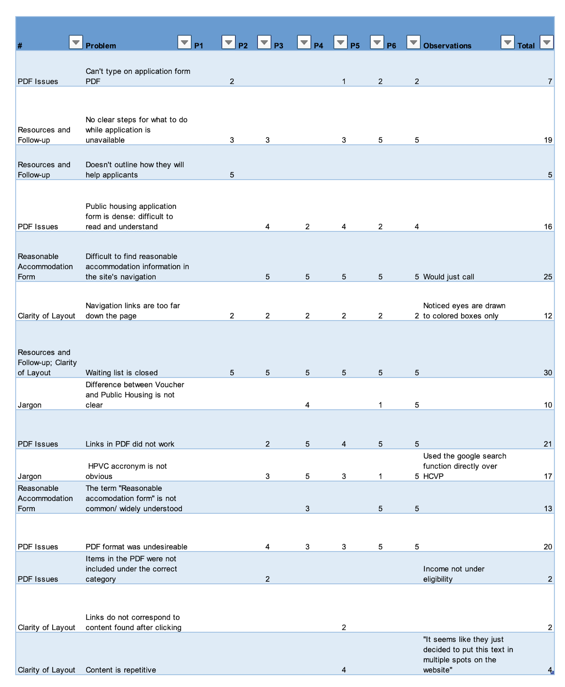

Usability Test of Housing Authority of Baltimore City's Website
The Housing Authority of Baltimore City aims to provide affordable housing to eligible low income families individuals in the Baltimore area. Unfortunately, the waiting list for their public housing program has been closed for many years. I worked with a small team on a generative research project on their website. We conducted a task analysis study in combination with the Tobii 2 eye tracker in the University of Baltimore Research Lab to find out what issues users have when using the website and searching for public housing assistance. This was an observational research project, using live eye tracker viewing and eye tracker visualizations to support findings from our semi-structured interview and questionnaire responses.
Challenge
We were asked to find issues surrounding the HABC website, in particular with the section on the public housing program. We decided that a study incorporating user tasks and observational eye tracking would help us discover where and why users have issues navigating the website and finding the information they need.
Methodology
- Eye tracking research study
- Task walkthrough & analysis
- Qualitative interview
- Statistical analysis of results
Research design
This was an observational study with 6 participants who completed tasks corresponding to our research questions while the moderator asked pre-determined as well as open-interview questions. The observer made notes on live eye tracking and participant responses. We analyzed task completion rates and qualitative findings from the interview and our observations.
Eye tracking
Observational:
Live eye tracking revealed where participants focused their attention while searching for the information they needed to complete the task. By observing eye gaze and asking questions, we found areas of the website where participants were uncertain about direction likely because they did not see the necessary information. Participants focused on the most visually salient information (such as larger and spatially distinct links) first without reading blocks of text.
Task Analysis
We designed our task and script to dig deeper into issues with the website, beyond the fact that the public housing program waitlist is closed. We wanted to find out whether users know that the wait list is closed soon after they start looking for the application, and we wanted to discover if there were actionable steps to take besides the application.

Research findings and insights
We calculated descriptive statistics for each of our user task success rates, which revealed the areas that needed the in depth qualitative analysis. As three observers we made separate notes from the eye tracking recordings and came to an agreement about the most significant findings to be reported to the organization.
Post-project reflections
This design was an effective way to explore potential issues surrounding the application for housing on the website. The study would be greatly improved with better sampling of participants. We were able to recruit 6 participants who were similar in age, and due to recruitment limitations we were unable to screen based on likelihood of needing the services provided by the Housing Authority of Baltimore City. Ideally this study would be performed with a sample of potential applicants with varied backgrounds representing this population.
Eye tracking in this study was supplementary to usability task analysis, and primarily used for qualitative analysis. Eye tracking could be used more effectively by assigning areas of interest (what content did participants need to see in order to complete the task?) and evaluating metrics associated with these areas. The most helpful metrics would likely be the number of gaze visits and gaze duration, both of which can indicate relative degrees of difficulty with the task. This would need to be verified by asking clarifying questions to the participant during or after the study. This would help reveal their thought process similar to a cognitive walkthrough.